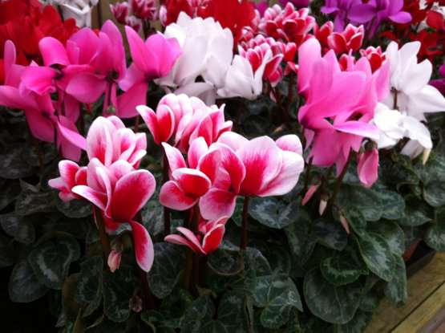

Flores de otoño para decorar tu hogar
» DRÁCENA «
Son flores preciosas que ayudan a decorar cualquier rincón de la casa, ya sea
interior o exterior. Sus hojas estrechas y redondeadas las puedes encontrar en
diferentes tonalidades: lisas, rayadas, rojizas, etc. Las dracenas purifican el
ambiente y a penas necesitan de cuidados.
Estas plantas son muy agradecidas para cultivar. Basta con que tengan bastante luz
y regarlas una o dos veces en otoño. Si buscas plantas para decorar en otoño, esta
es una de nuestras favoritas.
» MONSTERA «
Otra fantástica planta que también la conocerás como «costilla de Adán». Es una planta
popular que decora muchos sitios y que, además, no necesita de muchos cuidados. Por ello,
si eres una persona ocupada a la que le encantan las flores pero no tiene demasiado tiempo
para ello, la monstera es una buena elección.
Ahora en otoño puede ser la protagonista de tus estancias, sobre todo si vives en un lugar
donde las temperaturas no sean muy extremas. Además esta planta no necesita de mucha luz ni
de muchos cuidados, por lo que es perfecta para tenerla en interior.
» BREZO «
Hermosa planta para tenerla y decorar nuestras estancias favoritas. El brezo es una planta que
suele florecer en el mes de septiembre y que no necesita de demasiados cuidados. Basta con
tenerla en un lugar con algo de sombra y tener en cuenta no encharcar su tierra.
» MARGARITAS «
Una flor a tener en cuenta, para decorar en otoño, son las margaritas. Aunque no lo creas
también las puedes encontrar en estos meses. Es una especie que se adapta bien alas zonas más
frías y que no requiere de muchos cuidados. Tan solo tienes que prestar atención al riego, puesto
que crecen bien en suelos húmedos. Además, ten presente un abono correcto para que duren toda
la temporada.
» CYCLAMEN «
Si buscas flores preciosas para decorar tu casa durante el otoño, ten en cuenta el cyclamen. Hasta
que vuelva la temporada de calor, esta planta nos dará flores blancas, fucsias, rosas, etc. Si evitamos
el sol directo y las altas temperaturas, esta planta puede vivir perfectamente con nosotros.

» CRISANTEMOS «
Otra de las flores espectaculares, para decorar en otoño, son los crisantemos. Es una planta un poco
delicada que le dará a los espacios ese toque elegante que buscamos. Además, podemos encontrarla en
tamaños y colores diferentes.
» HORTENSIAS «
Por último, las hortensias son flores espectaculares que podemos tener en otoño para decorar.
Sus flores aportarán mucho color tanto en zonas de interior como en exterior. En otoño aportan una
belleza de carácter rústico que te encantarán para decorar. No son flores con unos cuidados excesivos
y quedarán genial durante el otoño. ¿Qué te parece esta flor para decorar?
Ideas para decorar la casa con flores secas
» Flores secas en jarrones «
Existen muchas maneras de decorar la casa con flores secas. Una de estas formas es utilizarlas en un
jarrón o un bonito recipiente que te guste. Aquí se puede poner una, dos o un ramo entero de flores
secas. Para darle cierto aire rústico a tu hogar puedes utilizar jarrones de porcelana o de cerámica.
En cambio, si te gusta innovar un poco y que tus espacios tengan un toque más moderno, puedes utilizar
recipientes de cristal.
» Una cesta de mimbre «
Las cestas de mimbre también te ayudarán a decorar con flores secas de una manera más rústica. Si te
gusta el estilo vintage, boho chic o campestre, hazte con una cesta del tamaño que quieras. Dentro
puedes decorar con todo tipo de flores secas que te gusten.
Estas cestas quedarán bien en rincones que tengas en tu casa y que no utilices para nada. También quedarán
bien en algunas superficies principales o bien en el propio baño. Puedes decorar con cestas y flores secas
ventanas, zonas de acceso o incluso los pies de la cama.
» Sombreros decorados con flores secas «
Hay muchas cosas que se pueden decorar con flores secas y que, en conjunto, servirán a modo de decoración del
hogar. Si tienes un sombrero típico de paja, puedes agregarles algunas flores secas. De esta manera podrás
colgarlo o ponerlo sobre una superficie y decorar con este mismo sombrero. ¿Qué te parece la idea?
» Decora con flores secas y marcos «
Cuando tengas preparadas tus flores secas, las puedes enmarcar. Sobre todo cuando son flores de una especie exótica
o flores que te hayan regalado y simbolicen algo especial para ti, las puedes enmarcara y quedarán preciosas.
Escoge un bonito marco que pegue en color, textura y forma con el resto de tus muebles. Puedes decorar con flores
secas como si estas fuesen fotografías y ponerlas en la pared o bien en una mesita.
» En platos de comida y pasteles «
Una gran idea es utilizar flores secas en tus elaboraciones culinarias o de pastelería. En este sentido estas flores van
a decorar platos o preciosos pasteles. Es una idea estupenda que te servirá para deleitar a tus comensales en tus
elaboraciones en casa. Seguro que les gustará este toque único que puedes aportar con las flores secas.
» Decorar el techo con flores secas «
Las flores secas pueden decorar cualquier parte del hogar. Ya hemos visto que se pueden poner en jarrones, cestas o, incluso,
en elaboraciones de tus platillos favoritos. Ahora, hablamos sobre la idea de colgarlas en el techo con cuerdas y macetas.
Las flores en el techo quedan genial y verás que cambia el ambiente en un momento.
Puedes utilizar casi cualquier tipo de planta seca en el techo, pero las que mejor quedan son el trigo natural junto a otras
flores de vivo color. Ya sabes que puedes utilizarla en macetas, cestos o simplemente colgar los ramilletes tal cual.
» Bodegones de jarrones y accesorios «
Como hemos comentado al principio de este post, decorar con flores secas es una manera de alegrar cualquiera de los ambientes
de una casa. Además, hay muchas formas de hacerlo para que queden genial.
Una gran idea, para decorar con flores secas, es realizar bodegones con ellas. Dentro de los bodegones hay muchos artículos que
se pueden incluir dentro. Jarrones, trapos, mantelería, fruta, faroles, comida y, como no, las flores secas. Hay cientos de
combinaciones que se pueden crear para hacer bodegones estupendos y decorar con ellos.
Si buscas un toque diferente para tu hogar, utiliza las flores secas en bodegones. Los puedes utilizar como centros de mesa en
la parte principal de la casa. También puedes hacer bodegones en otros espacios como estanterías, en la cocina o en una salita.